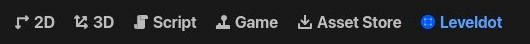
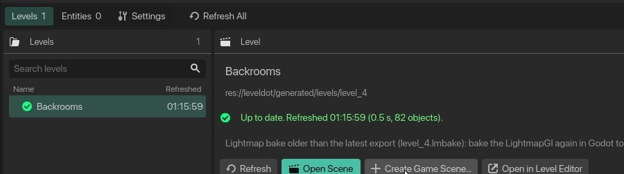
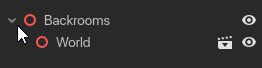

Quick Start
From download to your own game scene in a few steps.
- Download Leveldot from itch.io, extract the ZIP and run
LeveldotEditor.exe(Install has the details). - Open Leveldot and save your project (Ctrl+S) in a folder of your choice.
- Link the Godot project your levels should go to: choose File → Link Godot Project… and pick the folder that holds
project.godot. - Export to Godot: save again with Ctrl+S (or Ctrl+E). Your levels go into the game.
- In Godot: make sure the Leveldot plugin is on (Project → Project Settings → Plugins), then Project → Reload Current Project.
- Create Game Scene: open the Leveldot screen at the top of Godot, select your level in Levels, press Create Game Scene… and choose where to save it.


Leveldot makes the scene for you and opens it, nothing to build by hand: your level is inside it as World. Add your player, enemies and scripts to this scene, next to World.

Keep World as it is. If you make World editable in Godot, your changes in Leveldot no longer appear.
Only once. These steps are the first setup. After that, export from Leveldot (Ctrl+S or Ctrl+E) and World updates itself.
More on linking: Link Godot.